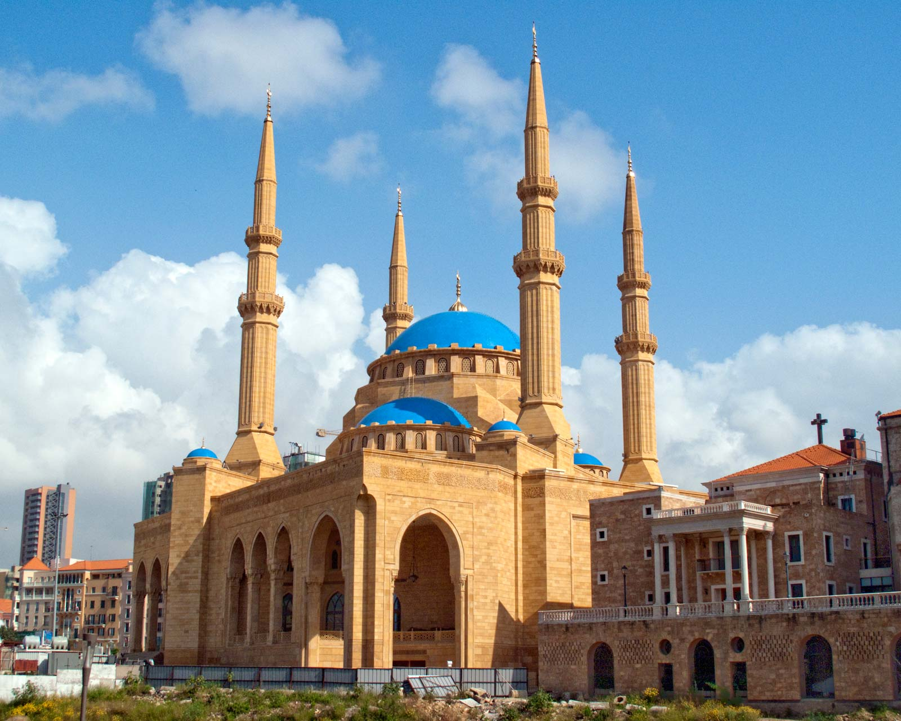
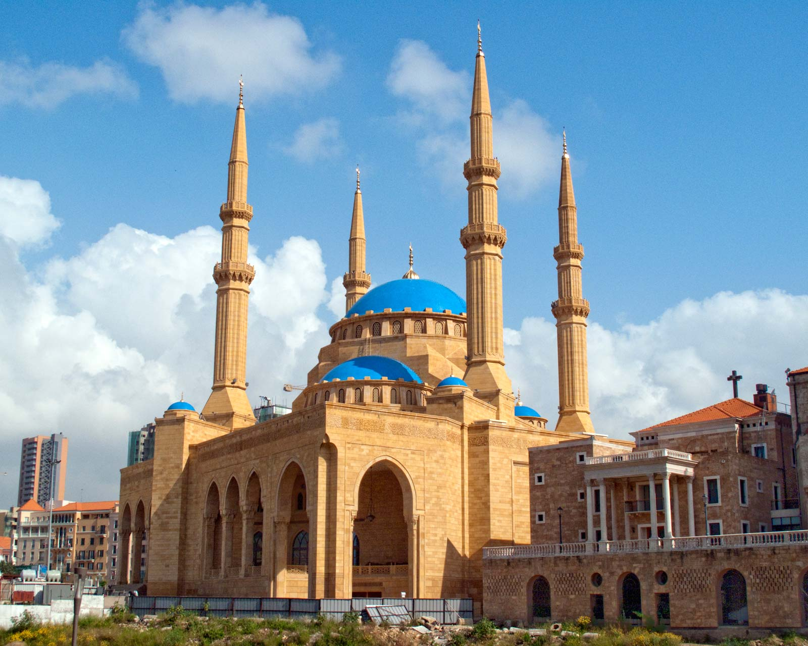

Attractions in Beirut
Beirut Souks

Zaitunay Bay

Mohammad-Al-Amin-Mosque

| Map | Population | Area | GDP | Primary Language | Year of Founding | Time Zone | Currency |
|---|---|---|---|---|---|---|---|
| Satelite View | 360 Thousand | 7.6 square miles | $15 billion | Arabic | 2500 BC | UTC +2 | Lebanese Pound |
Groups Before Ottoman Rule:
Beirut Souks
Zaitunay Bay
Mohammad-Al-Amin-Mosque
